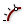

 Evaluate Length
Component Index > Curve > Analysis > Eval
Evaluate a curve at a certain factor along its length. Length factors can be supplied both in curve units and normalized units. Change the [N] parameter to toggle between the two modes.
Inputs
| Name | ID | Description | Type |
|---|---|---|---|
| Curve | C | Curve to evaluate | Curve |
| Length | L | Length factor for curve evaluation | Number |
| Normalized | N | If True, the Length factor is normalized (0.0 ~ 1.0) | Boolean |
Outputs
| Name | ID | Description | Type |
|---|---|---|---|
| Point | P | Point at the specified length | Point |
| Tangent | T | Tangent vector at the specified length | Vector |
| Parameter | t | Curve parameter at the specified length | Number |
Copyright © 2016 Robert McNeel & Associates.